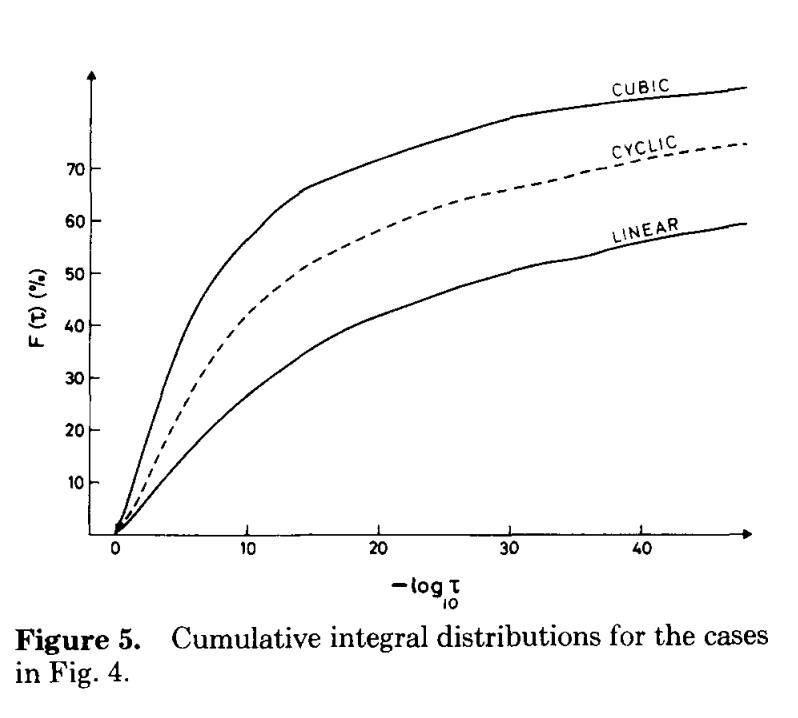
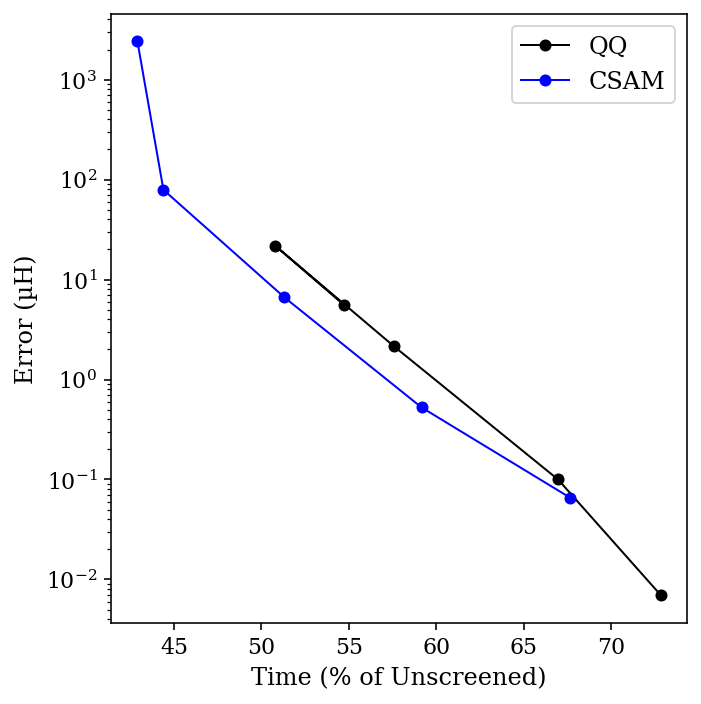
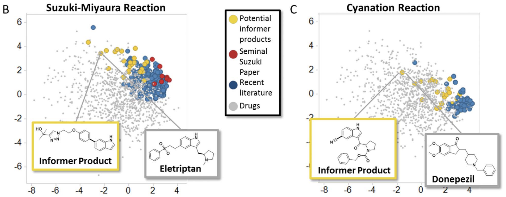

For almost all Hartree–Fock-based computational methods, including density-functional theory, the rate-limiting step is calculating electron–electron repulsion. (This isn’t true for semiempirical methods, where matrix diagonalization is generally rate-limiting, or for calculations on very large systems.)
When isolated single molecules are the subject of calculations (as opposed to solids or periodic systems), most programs describe electronic structure in terms of atom-centered basis sets, which reduces the electron–electron repulsion problem to one of calculating electron repulsion integrals (ERIs) over quartets of basis shells. Framed this way, it becomes obvious why ERIs are the bottleneck: the number of ERIs will scale as O(N4), meaning that millions of these integrals must be calculated even for relatively small molecules.
I tried to get DALL-E to make a visual representation of integral screening; this was the best I got.
One big advance in electronic structure calculations was the development of integral screening techniques, the most popular of which is the “Schwartz inequality” (derived from the Cauchy–Schwartz inequality, but actually developed by Mario Häser and Reinhart Ahlrichs). If we denote an ERI over shells A, B, C, and D as (AB|CD), then the Schwartz inequality says:
(AB|CD) ≤ (AB|AB)0.5 (CD|CD)0.5
This is pretty intuitive: each shell pair will interact with itself most, since it has perfect overlap with itself, and so the geometric mean of the interaction of each shell pair with itself is an upper bound for the interaction between the two shell pairs. (Why would (AB|AB) ever be a small value? Well, A and B might be super far away from each other, and so the “shell pair” has very little overlap is just negligible.)
This result is very useful. Since there are many fewer integrals of the form (AB|AB), we can start by calculating all of those, and then use the resulting values to “screen” each shell quartet. If the predicted value is less than some predefined cutoff, the integral is skipped. While these screening methods don’t help much with small molecules, where all of the shells are pretty close to each other, they become crucial for medium-sized molecules and above.
(What’s the cutoff value? Orca defaults to 10-8, Gaussian to 10-12, Psi4 to 10-12, and QChem to 10-8–10-10 depending on the type of calculation.)
The Schwartz inequality neglects, however, another way in which (AB|CD) might be very small: if (AB| and |CD) aren’t independently negligible, but are just really far away from each other. One elegant way to address this (out of many) comes from recent-ish work by Travis Thompson and Christian Ochsenfeld. They define an intermediate quantity M for each pair of shells, derived from different high-symmetry integrals:
MAC := (AA|CC) / ( (AA|AA)0.5 (CC|CC)0.5 )
MAC intuitively represents the distance between the two shells, and is guaranteed to be in the range [0,1]. Thompson and Ochsenfeld then use this quantity to propose an estimate of a shell quartet’s value:
This is no longer a rigorous upper bound like the Schwartz inequality, but it’s a pretty good estimate of the size of the integral.
How much of a difference does this make in practice? To test this, I ran HF/STO-3G calculations on dodecane in the fully linear configuration. As shown by Almlöf, Faegri, and Korsell, linear molecules benefit the most from integral screening (since the shells are on average farther apart), so I hoped to see a sizable effect without having to study particularly large molecules.

Almlöf, Faegri, and Korsell, Figure 5. This paper is terrific.
I compared both the Schwartz (“QQ”) bound and Ochsenfeld’s CSAM bound for integral thresholds ranging from 10-9 to 10-13, and compared the result to a calculation without any integral screening. The total time for the calculation, as a percent of the unscreened time, is plotted below against the error in µHartree (for the organic chemists out there, 1 µH = 0.00063 kcal/mol):

Comparing CSAM and QQ.
A few things are apparent for this data. First, even tight thresholds lead to dramatic speedups relative to the unscreened calculation—and with minimal errors. Secondly, the CSAM bound really does work better than the QQ bound (especially if you ignore the high-error 10-9 threshold data point). For most threshold values, using CSAM leads to about a 20% increase in speed, at the cost of a 3-fold increase in an already small error. Viewed visually, we can see that the Pareto frontier for CSAM (blue) is just closer to the optimal bottom-left corner than the corresponding frontier for QQ (black).
I hope this post serves to explain some of the magic that goes on behind the scenes to make “routine” QM calculations possible. (If you thought these tricks were sneaky, wait until you hear how the integrals that aren’t screened out are calculated!)
Meta-optimization has long been a focus of research in computer science, where new optimization algorithms can have an incredibly high impact (e.g. ADAM, one of the most commonly used optimizers for neural network training). More recently, the advent of directed evolution has made optimization methods a central focus of biocatalysis, since (in many cases) the efficacy of the reaction one discovers is primarily dependent on the efficacy of the optimization method used.
In contrast, it seems that meta-optimization has historically attracted less attention from “classic” organic chemists, despite the central importance of reaction optimization to so much of what we do. This post aims to show some of the ways in which this paradigm is changing, and briefly summarize some of what I consider to be the most interesting and exciting recent advances in chemical meta-optimization.
(This is a big and somewhat nebulous area, and I am certainly leaving things out or not paying due homage to everyone. Sorry in advance!)
Design of Experiments, and Dealing with Discrete Variables
Perhaps the best-known optimization algorithm in chemistry is “design of experiments” (DoE), which uses statistical methods to estimate the shape of a multiparameter surface and find minima or maxima more efficiently than one-factor-at-a-time screening. (DoE is a pretty broad term that gets used to describe a lot of different techniques: for more reading, seetheselinks.)
DoE has been used for a long time, especially in process chemistry, and is very effective at optimizing continuous variables (like temperature, concentration, and equivalents). However, it’s less obvious how DoE might be extended to discrete variables. (This 2010 report, from scientists at Eli Lilly, reports the use of DoE to optimize a palladium-catalyzed pyrazole arylation, but without many details about the statistical methods used.)
A nice paper from Jonathan Moseley and co-workers illustrates why discrete variables are so tricky:
How does one compare such different solvents as hexane and DMSO for example? Comparing their relative polarities, which is often related to solubility, might be one way, but this may not be the most important factor for the reaction in question. Additionally, this simple trend may not be relevant in any case, given for example that chlorinated solvents have good solubilising power despite their low-to-medium polarity (as judged by their dielectric constant). On the other hand, the high polarity and solubilising power of alcohols might be compromised in the desired reaction by their protic nature, whilst the “unrelated” hexane and DMSO are both aprotic.
In summary, replacing any one of the discrete parameters with another does not yield a different value on the same axis of a graph, as it would for a continuous parameter; instead it requires a different graph with different axes which may have no meaningful relationship to the first one whatsoever. This means that every single combination of catalyst/ligand/base/solvent is essentially a different reaction for the same two starting materials to produce the same product. (emphasis added)
The solution the authors propose is to use principal component analysis (PCA) on molecular descriptors, such as “measurable physical factors (e.g., bp, density, bond length), or calculated and theoretical ones (e.g., electron density, Hansen solubility parameters, Kamlet–Taft solvent polarity parameters),” to convert discrete parameters into continuous ones. This general approach for handling discrete variables—generation of continuous molecular descriptors, followed by use of a dimensionality reduction algorithm—is widely used today for lots of tasks (see for instance this paper on DoE for solvent screening, and my previous post on UMAP).
Choosing Intelligent Screening Sets
With continuous descriptors for formally discrete variables in hand, a natural next step is to use this data to choose catalyst/substrates that best cover chemical space. (This can be done with several algorithms; see this paper for more discussion) In 2016, this technique was popularized by the Merck “informer library” approach, which generated sets of aryl boronic esters and aryl halides that could be used to fairly evaluate new reactions against complex, drug-like substrates. (See also this recent perspective on the Merck informer libraries, and similar work from Matt Sigman a few years earlier.)

Illustration of the Merck informer library (yellow) in chemical space, compared to drugs (grey) and compounds from recent literature (blue).
While the Merck informer libraries were intended to be shared and used by lots of research groups, recently it’s become more common for individual research groups to design their own project-specific screening sets. Abbie Doyle and co-workers kicked this off in 2022 by using DFT-based descriptors, UMAP dimensionality reduction, and agglomerative hierarchical clustering to generate a maximally diverse set of commercial aryl bromides. Other groups soon followed suit: Karl Gademann used this approach to study bromotetrazine cross coupling, while Marion Emmert and co-workers at Merck employed similar methods to investigate azole carboxylation. (I’ve also used this approach for substrate selection!)
This approach can also be used to design intelligent sets of catalysts/ligands at the outset of a screening project. Using their “kraken” dataset of phosphine properties, Tobias Gensch and Matt Sigman proposed a set of 32 commercially available ligands which aims to cover as much of phosphine chemical space as possible in an initial screen. Jason Stevens and co-workers combined this idea with the substrate-selection methods from the previous paragraph to perform a detailed study of Ni-catalyzed borylation under many conditions, and tested a variety of ML models on the resulting dataset. (Scott Denmark and co-workers have also used a variant of this idea, called the Universal Training Set, to initialize ML-driven reaction optimization.)
New Optimization Algorithms
As in every area of life, ML-based approaches have been used a lot for optimization recently. This isn’t new; Klaus Jensen and Steve Buchwald used machine learning to drive autonomous optimization in 2016, and Richard Zare published a detailed methodological study in 2017. Nevertheless, as with computational substrate selection, these techniques have come into the mainstream in the past few years.
I mentioned the work of Scott Denmark on ML-driven optimization before, and his team published two more papers on this topic last year: one on atropselective biaryl iodination, and one on optimization of Cinchona alkaloid-based phase transfer catalysts. In particular, the second paper (conducted in collaboration with scientists at Merck) illustrates how an ML model can be updated with new data as optimization progresses, allowing many sequential rounds of catalyst development to be conducted.
Abbie Doyle’s group has done a lot of work on using Bayesian optimization (BO) to drive reaction optimization. Their first paper in this area illustrated the capacity of BO to avoid spurious local minima, and went on to validate this approach in a variety of complex problems. Even better, they compared the results of BO to chemist-guided optimization to see if computer-driven optimization could outcompete expert intuition. To quote the paper:
In total, 50 expert chemists and engineers from academia and industry played the reaction optimization game (Fig. 4c). Accordingly, the Bayesian reaction optimizer also played the game 50 times (Fig. 4b), each time starting with a different random initialization. The first point of comparison between human participants and the machine learning optimizer was their raw maximum observed yield at each step during the optimization. Humans made significantly (p < 0.05) better initial choices than random selection, on average discovering conditions that had 15% higher yield in their first batch of experiments. However, even with random initialization, within three batches of five experiments the average performance of the optimizer surpassed that of the humans. Notably, in contrast to human participants, Bayesian optimization achieved >99% yield 100% of the time within the experimental budget. Moreover, Bayesian optimization tended to discover globally optimal conditions (CgMe-PPh, CsOPiv or CsOAc, DMAc, 0.153 M, 105 °C) within the first 50 experiments (Fig. 4b). (emphasis added)
Average yield per batch from Bayesian optimization (black) vs. humans (blue), showing how Bayesian optimization outcompetes humans despite a worse start.
Their subsequent work has made their optimization app available online, and illustrated the application of this strategy to other reactions.
Closely related is this work from Aspuru-Guzik, Burke, and co-workers, which uses a “matrix-down” approach to choosing representative substrates for the Suzuki reaction (similar to the substrate-selection algorithms discussed previously). The selected substrates are then subjected to automated high-throughput screening guided by an uncertainty-minimizing ML model (i.e., new reactions are chosen based on the regions of chemical space that the algorithm has the least knowledge about; this is similar to, but distinct from, Bayesian optimization). This is a pretty interesting approach, and I hope they study it further in the future. (Aspuru-Guzik has done lots of other work in this area, including some Bayesian optimization.)
Finally, two papers this year (that I’m aware of) put forward the idea of using multi-substrate loss functions for optimization: our work on screening for generality and a beautiful collaboration from Song Lin, Scott Miller, and Matt Sigman. These papers used “low-tech” optimization methods that are familiar to practicing organic chemists (e.g. “screen different groups at this position”), but evaluated the output of this optimization not based on the yield/enantioselectivity of a single substrate but on aggregate metrics derived from many substrates. The results that our groups were able to uncover were good, but I’m sure adding robotics and advanced ML optimization will turbocharge this concept and find new and better catalysts with truly remarkable generality.
Conclusions
Reaction optimization is a common task in organic chemistry, but one that’s commonly done without much metacognition. Instead, many researchers will screen catalysts, substrates, and conditions based on habit or convenience, without necessarily dwelling on whether their screening procedure is optimal. While this may work well enough when you only need to optimize one or two reactions in your whole graduate school career (or when acquiring each data point takes days or weeks), ad hoc strategies will at some point simply fail to scale.
Organic chemistry, long the realm of “small data,” is slowly but inexorably catching up with the adjacent sciences. As progress in lab automation and instrumentation makes setting up, purifying, and analyzing large numbers of reactions easier, experimental chemists will have to figure out how to choose which reactions to run and how to handle all the data from these reactions, using tools like the ones discussed above. Like it or not, data science and cheminformatics may soon become core competencies of the modern experimental chemist!
Note: old versions of this post lacked a discussion of SN2. I've added an appendix which remedies this.
In “The Rate-Limiting Span,” I discussed how thinking in terms of the span from ground state to transition state, rather than in terms of elementary steps, can help prevent conceptual errors. Today, I want to illustrate why this is important in the context of a little H/D KIE puzzle.
Consider the following reaction, which could conceivably proceed via an SN2 mechanism (red), an SN1 mechanism (blue), or really anywhere on the continuum:
This is a bit of a silly reaction, admittedly. The intermolecular version or the endo version would have been better.
What experiment can be used to investigate the mechanism of this reaction? One possibility is an alpha H/D KIE experiment at the iminium position. Reactions with a sp3 ground state and an sp2 transition state display secondary normal alpha H/D KIEs, while reactions with an sp2 ground state and an sp3 transition state display secondary inverse KIEs.
Thus, one might think “if iminium formation is rate-limiting, the KIE will be normal, but if alkene addition is rate-limiting, the KIE will be inverse.”
Unfortunately this is not true. Instead, all mechanistic possibilities give secondary normal KIEs! I investigated this model system computationally at the wB97X-D/6-31G(d)/SMD(CH2Cl2) level of theory. Here’s a More O’Ferrall–Jencks plot of the H/D KIE at the iminium position, computed with PyQuiver
(breaking bond on Y axis, forming bond on X axis):
The raw data from PyQuiver is a little fuzzy, so I applied a convolution to smooth the data. Details later on.
Rather than telling us which step is rate-limiting, all the KIE shows us is how much the transition state resembles an iminium ion (bottom right). Structures with long C–Cl bond distances and short C–C bond distances have substantial isotope effects (around 20%), while structures with forming or breaking bonds have smaller isotope effects.
Why is this? Both ionization and addition proceed through iminium-like structures that are substantially sp2-hybridized at carbon, irrespective of whether sp2 character is technically increasing or decreasing in the elementary step. Relative to the starting material, both transition states look like iminium ions and thus lead to large isotope effects.
These both look pretty much like iminium ions.
We can also conceptualize this in terms of elementary steps. Taken by itself, alkene addition does lead to an inverse kinetic isotope effect, as seen by the decreasing values as one moves left from the iminium—but an inverse isotope effect relative to the normal equilibrium isotope effect of the iminium. In this system, the equilibrium isotope effect of the iminium is larger than the kinetic isotope effect for alkene addition, and so the combination of these two effects leads to a (smaller) overall normal effect.
(This is the opposite of primary H/D KIEs, where central transition states lead to the largest isotope effects and equilibrium effects are typically small. Here, the isotope effect is mainly a function of hybridization, and so the later the TS, the greater the difference in hybridization and the larger the isotope effect.)
In summary, although this experiment seems informative, it’s actually not very useful. It tells you something about the structure of the transition state, but not which step is rate-limiting! In this case, a better experiment would be to measure 13C KIEs, or an H/D KIE on the nucleophile.
Appendix I: What About SN2?
On Twitter, Mark Levin asks about the KIE for the concerted path. I originally meant to include a discussion of this, but then totally forgot to! So let’s fix that.
As shown in the graph above, extremely concerted pathways (i.e. going right down the middle of the MOJ plot) will have pretty small isotope effects. These sorts of mechanisms are common where the carbocation would be extremely unstable (methyl iodide) but much less common for stabilized carbocations like we’re discussing here. When oxocarbeniums or iminiums are involved, even “concerted” mechanisms shift towards the bottom right corner: this is the “loose”/“exploded” SN2 often seen in glycosylation. These pathways will have a modest to large H/D KIE, depending on the exact system and how “exploded” they are (see page 53 of this SI for examples)
Putting this together, then, what experimental results would be conclusive? A very small KIE would be diagnostic for a “classic” synchronous SN2 process, which I consider to be very unlikely here. But medium or large H/D KIEs are consistent with any possibility: SN1 with rate-limiting ionization, SN1 with rate-limiting nucleophilic attack, or a loose SN2. There’s an annulus of different mechanistic possibilities that all give about the same isotope effect, as shown below:
Any TS in the red zone is consistent with a moderately large KIE (say, 15%).
To make matters worse, H/D KIEs are pretty tough to simulate quantitatively, because of tunneling, so the annulus isn’t even that precise. That’s why I think this isn’t a very good experiment.
Appendix II: Smoothing the KIE Grid
The raw KIE values from PyQuiver were pretty noisy, probably because there are small or multiple imaginary frequencies for some of these non-stationary points, so I used convolution to smooth things out a bit.
import numpy as np
from scipy.ndimage import convolve
#### this code block takes a 2d np.ndarray of KIE values
#### and returns a smoothed np.ndarray with the same dimensions
corner_w = 0.05
edge_w = 0.2
kernel = np.array([
[corner_w, edge_w, corner_w],
[edge_w, 1 ,edge_w],
[corner_w, edge_w, corner_w]
])
kernel = kernel / np.sum(kernel)
smooth_grid = convolve(kie_grid, kernel, mode="nearest")
I haven’t seen this technique used before, but it doesn’t seem unreasonable to me.
Last January, I aimed to read 50 books in 2022. I got through 32, which is at least more than I read in 2021.
There’s been a bit of discourse around whether setting numerical reading goals for oneself is worthwhile or counterproductive. I don’t have a strong opinion in the abstract, but I noticed that consciously tracking how many books I read served as a little nudge to read more than I would otherwise, without really compromising the quality of books I was reading.
In order, then:
#1. Neal Stephenson, Snow Crash (reread)
I read this in high school, and wanted to read it again in light of recent Metaverse-related discourse. It didn’t disappoint, although it’s a little more “action movie” than Stephenson’s later works.
#2. Aristotle, Nicomachean Ethics
#3. Tim Keller, Prayer (reread)
#4–17. Robert Jordan & Brandon Sanderson, Wheel of Time
Beyond the surface-level plot (which is fun), Wheel of Time is a fascinating exploration of a number of societies structured around complementarianism at a deep level.
#18. Paul Tripp, Parenting
#19. Peter Thiel, Zero To One
#20. Peter Scazzero, Emotionally Healthy Spirituality
#21. Eric Berger, Liftoff
This is a good account of the early days of SpaceX, and works well as a book-length answer to the question “What decisions or mindsets allowed Elon Musk to succeed in starting a rocket company when so many other billionaires failed?” or equivalently “What—besides money—explains SpaceX’s success?”
My summary, based on the book, would be (in no particular order): (1) a focus on recruiting top talent, (2) a “can-do” spirit / commitment to moving quickly and recklessly, (3) decisive decision-making at top levels of the organization, (4) a willingness to internalize lots of tasks to increase efficiency, and (5) luck.
#22. Roald Dahl, Going Solo
#23. Yiyun Li, Must I Go
#24. Tyler Cowen & Daniel Gross, Talent
#25. Stanley Gundry (Ed.), Five Views on Law and Gospel
This book presents five different theological “takes” on the relationship between Old Testament law and the New Testament—there was much less consensus than I expected! It is interesting but scholarly, and not an easy read.
There are a whole bunch of books in this series; each author writes an essay explaining their position, and then writes brief responses to the other authors’ positions. This format should be more common!
#26. Albert Hirschman, Exit, Voice, and Loyalty
I discussed pieces of this book here; the rest is also good.
#27. Celeste Ng, Little Fires Everywhere
#28. Fuchsia Dunlop, The Food of Sichuan
#31. Margaret Atwood, Oryx and Crake
#32. Alison Weir, The Wars of the Roses
This book is a nice account of the Wars of the Roses in the style of a novel; I didn’t know anything beyond the broad strokes, so I found it quite gripping. My biggest complaint is that the book only goes through 1471, and so doesn’t cover any of the Bosworth Field-adjacent events.
My reading this year was about 50% fiction (18 books), with the remainder mostly divided between business (5 books) and Christianity (5 books). My main goal for next year is to read more history; I didn’t end up reading very much history this year, and I miss it.
A technique that I’ve seen employed more and more in computational papers over the past few years is to calculate Boltzmann-weighted averages of some property over a conformational ensemble. This is potentially very useful because most complex molecules exist in a plethora of conformations, and so just considering the lowest energy conformer might be totally irrelevant.
To quote a recent perspective from Grimme and friends:
For highly flexible structures, a molecular property, such as energy, nuclear magnetic resonance spectra, or optical rotation values may not be sufficiently described by a single structure. At finite temperatures, various conformers are populated and the overall property must be described as thermal average over the unique property values of each conformer.
What's been bothering me about this, however, is that Boltzmann weights are calculated as e to the power of the relative energy:
Since relative energies of conformers are usually calculated with only middling accuracy (±0.2 kcal/mol with common methods), we’re taking the exponential of a potentially inaccurate value—which seems bad from the standpoint of error propagation!
Excerpt from xkcd, on error propagation (line #3 is what's relevant here).
Grimme and co-authors address this point explicitly in their review:
At the same time, however, conformational energies need to be accurate to within about 0.1–0.2 kcal mol−1 to predict Boltzmann populations at room temperature reasonably well. This is particularly important since properties can vary strongly and even qualitatively between populated conformers…
Although the best answer is, of course, to just get more accurate energies, it's not always practical to do that in the real world.
If we take imperfect energies as our starting point, what's the best strategy to pursue?
One could imagine a scenario in which error causes relatively unimportant conformers to end up with large weights, making the answer even worse than the naïve approach would have been. If the lowest energy conformer accounts for 60-70% of the answer, might it be best to just stick with that, instead of trying to throw in some messy corrections?
To test this, I drew a random flexible-looking molecule with a few functional groups, conducted a conformational search using crest, and then optimized it and calculated 19F NMR shieldings using wB97X-D/6-31G(d). (There are better NMR methods out there, but the absolute accuracy of the shift isn’t really the point here.)
The lowest energy conformer of the molecule I drew (3-fluorohex-5-enal).
I then computed more accurate energies using DLPNO-CCSD(T)/cc-pVTZ, and compared the results from Boltzmann weighting with DFT and coupled-cluster energies.
(19F values are just the isotropic shielding tensor, and energies are in kcal/mol.)
Conformer
19F shift
DFT energy
DFT weight
CC energy
CC weight
c00003
401.76
0.00
0.624
0.00
0.529
c00001
403.08
1.02
0.112
0.68
0.167
c00010
396.63
1.12
0.093
1.10
0.083
c00007
391.45
1.56
0.045
1.54
0.039
c00004
396.77
1.82
0.029
1.64
0.033
c00006
400.16
2.31
0.013
1.75
0.028
c00029
400.37
2.36
0.012
1.75
0.028
c00032
393.96
2.05
0.020
1.76
0.027
c00027
394.60
2.54
0.009
2.21
0.013
c00017
394.69
3.12
0.003
2.27
0.011
c00018
402.24
2.24
0.014
2.35
0.010
c00011
381.31
2.59
0.008
2.49
0.008
c00023
388.77
2.51
0.009
2.54
0.007
c00013
390.32
3.02
0.004
2.61
0.006
c00020
394.97
3.23
0.003
2.62
0.006
c00015
398.24
3.02
0.004
2.97
0.004
Final 19F Shift
400.20
400.13
The match is really quite good, much better than just guessing the lowest energy conformer would have been! This is despite having a decent number of low-energy conformers, so I don’t think this is a particularly rigged case.
But, what if we just got lucky in this case? The relative energies are off by 0.28 kcal/mol on average. If we simulate adding 0.28 kcal/mol of error to each of the “true” energies a bunch of times, we can see how well Boltzmann weighting does on average, even with potentially unlucky combinations of errors.
Shifts from 100,000 simulations with random error added to CCSD(T) energies.
The above image shows the predicted shift from 100,000 different randomly generated sets of “wrong” energies. We can see that the Boltzmann-weighted value is almost always closer to the true value than the shift of the major conformer is (99.01% of the time, to be precise). This is despite substantial changes in the weight of the major conformer:
Major conformer weights from 100,000 simulations with random error added to CCSD(T) energies.
Thus, we can see that Boltzmann weighting is relatively resistant to random errors in this case. Although this is only one molecule, and no doubt scenarios can be devised where inaccurate energies lead to ludicrously incorrect predictions, this little exercise has helped temper my skepticism of Boltzmann weighting.
Thanks to Eugene Kwan and Joe Gair for discussions around these topics over the past few years. Data available upon request.